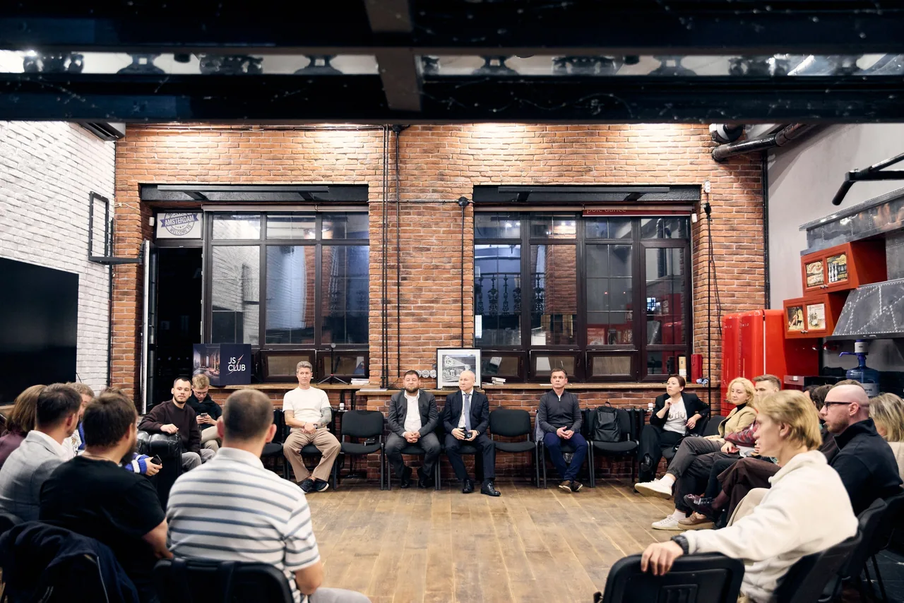

Сначала — состав
Для камерных кругов смотрим бизнес, роль, опыт и текущую задачу. Подтверждаем участие после рассмотрения заявки.
О клубе · Москва
«Бесславные предприниматели» — закрытый клуб собственников и совладельцев действующих компаний.
Мы знакомимся через реальные задачи: что меняете в компании, какое решение ищете, каким опытом готовы поделиться.
Условия участия
Состав сообщества
115+ резидентов из разных отраслей.
Здесь есть те, кто управляет производством, строит, развивает торговлю, IT, медицину и логистику. Общее — действующий бизнес и ответственность за решения.
Инвесторам подбираем подходящий формат участия. Если сомневаетесь, подходит ли ваш бизнес, обсудите это с Дмитрием.
 Публичный профиль Дмитрия
Публичный профиль Дмитрия Основатель и организатор клуба
Сообщество выросло из формата «Круг». Дмитрий организует встречи и собирает предпринимателей с разным опытом вокруг их текущих задач.
С чего выросло сообщество«Такие встречи ещё раз показывают: ценность клуба не в количестве людей, а в качестве состава, доверии и готовности участников реально помогать друг другу - опытом, контактами, идеями и конкретными действиями».
Дмитрий Сухов · из отчёта о камерном круге, 22 мая 2026 ↗
Прежде чем идти, расскажите Дмитрию о своём бизнесе и ожиданиях. Сможете обсудить состав, формат и условия участия.
Задать вопрос ДмитриюКультура общения
В круговых форматах важны состав, время на вопрос каждого и взаимный вклад.
Для камерных кругов смотрим бизнес, роль, опыт и текущую задачу. Подтверждаем участие после рассмотрения заявки.
Короткое представление помогает понять контекст. Модератор удерживает тему, а перерывы дают время договорить лично.
Приходите со своим вопросом и слушайте чужой. Делитесь практикой, рекомендуйте контакты. Навязчивые продажи мешают этому разговору.
Опыт из разных сфер
Опыт людей, приглашённых на встречи: автобизнес, управление международными компаниями, логистика и инфраструктурные инвестиции.
Совладелец Frank Auto.
В автобизнесе с 2003 года.
С чем знакомились участники
Доверие, сервис, команда и решения владельца. Разговор прошёл в интервью-формате: участники задавали вопросы и делились своим опытом.
Около 60 участников — предприниматели, собственники бизнеса и резиденты клуба.
Отчёт и видео встречиОснователь ESSG Consulting, экс-вице-президент и CEO Schneider Electric в Восточной Европе. В программе — переход бизнеса к новому масштабу.
Программа встречиВ ролике — опыт руководства международными компаниями, цифровые решения и автоматизация рутины. Дата съёмки в публикации не указана.
Предприниматель и инвестор в телеком-инфраструктуру. В программе — экономика инфраструктурных инвестиций и объектов связи.
Программа встречиОснователь One Cargo и Lux Packet. Приглашён к обсуждению бизнес-запросов вместе с другими собственниками.
Программа встречиЗдесь указаны роли в конкретных событиях. Участие в программе не означает резидентство в клубе.
Как прошла встреча 24 сентябряСлово участнику
В отзыве после встречи участник рассказывает о знакомстве с предпринимателями из разных сфер и возможности посмотреть на свою ситуацию чужими глазами.
После вечера 24 сентября разговоры между участниками продолжились. Для резидентов есть и закрытое сообщество — место для общения между очными встречами.
После встречи 24 сентября Что входит в резидентствоСледующий разговор — с вами
Посмотрите программу и выберите повод встретиться. Вступление в клуб можно обсудить, когда поймёте, что вам близок этот круг.
Посмотреть встречи Обсудить вступление Задать вопрос Дмитрию